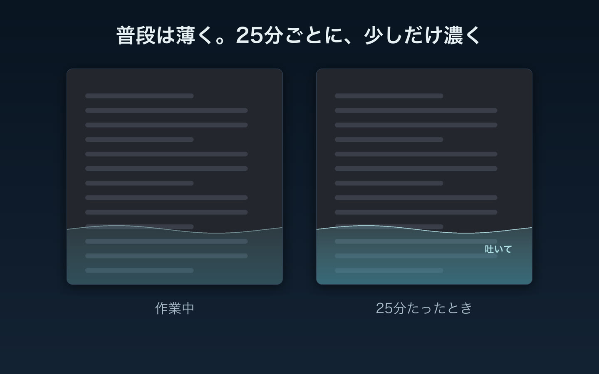
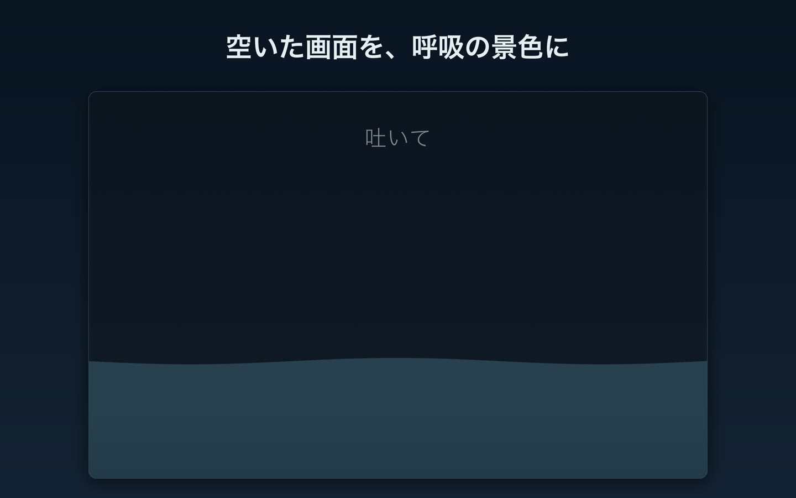

パソコンの前で浅くなる呼吸を、
画面の下の波で
画面の下端に、呼吸に合わせて寄せて引く波を出す Mac アプリです。普段は薄く出ているだけで、通知は出しません。
このページの下にも同じ波を出しています。寄せたら吸って、引いたら吐く。
いまは 吸って
こんなとき
長く画面に向かっているとき
波が目の端で寄せて引くので、呼吸のことを思い出すきっかけになります。
続けて作業したあと
25分続けて作業すると、波が30秒ほど濃くなります。
オンラインの面接や会議の最中
波は画面共有にも録画にも映りません。相手に知られずに、波に合わせて吸って吐けます。
25分ごとに波が濃くなる
- 波は普段は薄く、下の文字も透けて読めます。クリックも素通りします。高さと濃さはメニューで変えられ、消すこともできます。
- キーボードかマウスを25分続けて使うと、30秒ほど波が濃くなり、右端に「吸って／吐いて」が出ます。
- 5分以上手を止めると、作業時間を数え直します。
- 波の動きは、吸う4秒・吐く6秒（1分に6回）。吸う秒数と吐く秒数はメニューで選べます。

2枚目のディスプレイに潮を出せる
ディスプレイが2枚以上あるなら、1枚に潮が満ち引きする画面を出せます。色は朝・昼・夕・夜から選ぶか、時刻に合わせて変えられます。

通知・権限・通信なし
通知は出さず、アクセシビリティや画面収録などの権限も求めず、通信もしません。入力の中身や使っているアプリは読みません。メニューバーに常駐し、ログイン時に起動できます。
サポート
不具合や要望は Issues に書いてください。
プライバシーポリシー / Privacy Policy
最終更新: 2026-10-24
日本語
扱う情報
| 情報 | 使い道 | 置き場所 |
|---|---|---|
| 設定（画面下の波・専用画面の出し方、呼吸のパターン、見た目） | 次に起動したときに同じ設定で動かす | この Mac の中だけ |
| 最後にキーボードかマウスを操作してからの秒数 | 作業を続けているか、手を止めたかを判断する | 保存しない |
何を入力したか、どのアプリを使っているかは読みません。キーボードやマウスの操作の中身も読みません。
送信・共有
Tidebreath は通信をしません。OS の権限（アクセシビリティ・画面収録など）も求めません。情報を外に送ることも、第三者と共有することもありません。広告や利用状況の計測も入れていません。
削除
アプリを削除すると、設定も一緒に消えます。
問い合わせ
https://github.com/kenta3578/breath-corner-site/issues
English
Tidebreath is a menu bar app for Mac that helps you return to slow breathing while you work.
Information handled
| Information | Purpose | Where it is kept |
|---|---|---|
| Settings (shore waves, dedicated screen, breathing pattern, appearance) | To start with the same settings next time | Only on this Mac |
| Seconds since the last keyboard or mouse input | To tell whether you are still working or have paused | Not stored |
Tidebreath does not read what you type, which apps you use, or the content of your keyboard and mouse input.
Transmission and sharing
Tidebreath makes no network connections and asks for no system permissions (such as Accessibility or Screen Recording). It does not send any information off your Mac or share it with third parties. It contains no ads or analytics.
Deletion
Deleting the app also deletes its settings.